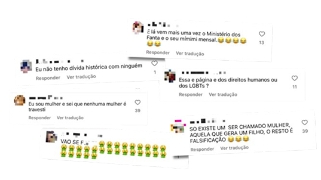

PERIGOS
Os Perigos da Internet: Como lidar com o ódio?
Comentários em redes sociais
O termo "hater" (do inglês "odiador") é usado para descrever pessoas que postam comentários negativos, ofensivos e maldosos nas redes sociais com o objetivo principal de causar desconforto, gerar conflito ou sentir-se superior, e muitas vezes o fazem de forma provocativa. Temos tipos de haters, sendo eles:
-
Trolls: Comentários provocativos para gerar conflito.
-
Bullies digitais: Ofensas pessoais e ataques repetitivos.
-
Fakes: Perfis falsos ou recém-criados para atacar.
-
Mentirosinhos: Inventam fatos ou distorcem situações para prejudicar.
Nos dias de hoje é comum abrir as redes sociais e ver vários comentários negativos em qualquer tipo de post, seja de uma celebridade, influencer, político, ou alguém comum. Também existem as famosas “polêmicas”, que abrangem um vasto leque de assuntos, como vazamentos de dados, a disseminação de notícias falsas, violações de privacidade, o uso controverso de inteligência artificial e a utilização indevida de plataformas para disseminação de discursos de ódio e assédio.
Segundo o “Relatório de Recomendações para o Enfrentamento ao Discurso de Ódio e ao Extremismo no Brasil”, produzido pelo Ministério dos Direitos Humanos e da Cidadania em 2023, as principais manifestações de ódio e de extremismo a serem enfrentadas são: misoginia e violência contra as mulheres; racismo contra pessoas negras e indígenas; ódio e violência contra a população, entre outras.
Menores de idade na Internet
Conteúdo impróprio
Conteúdo impróprio são materiais online inadequados ou nocivos, como conteúdo sexualmente explícito, violento, que promova ódio, ou informações perigosas. São elementos que podem prejudicar o bem-estar de um indivíduo, especialmente crianças e adolescentes, que são mais vulneráveis a esses riscos. A exposição a esse conteúdo pode levar os jovens a adotarem comportamentos não-saudáveis e não adequados para suas idades.
"Por muito tempo, enc ontramos maneiras de proteger as crianças, até que, com a criação da internet, muitos acharam que ali elas estariam seguras. Ledo engano! Nós as colocamos para navegar em mar aberto, sem supervisão, sem boia caso se afoguem, sem direção", avalia o psiquiatra do hospital Beneficência Portuguesa, de São Paulo, Jonathan Marcolini.
Crescimento Precoce
A internet tem causado uma “adultização” precoce em crianças e adolescentes, que acabam acessando conteúdos inadequados para a idade. Um exemplo disso são as “Sephora Kids”, meninas muito jovens influenciadas por redes como o TikTok a desenvolver um interesse excessivo por skincare e cosméticos, deixando de lado atividades típicas da infância. Esse fenômeno também foi intensificado pelos anos da pandemia, pelo aumento do custo de vida e por preocupações ambientais, que moldaram a geração Alfa de forma única. Por isso, é essencial repensar o uso das redes sociais, criando limites, incentivando o uso consciente da tecnologia e abrindo espaços de diálogo para proteger os jovens e permitir que vivam sua infância e adolescência de forma adequada.
Os anos de formação passados dentro de casa e online durante a pandemia, combinados com o impacto do aumento do custo de vida e dos desastres ambientais, fazem com que os Alfas tenham uma perspectiva única sobre o mundo. Por isso, torna-se essencial repensar o uso das redes sociais por crianças e adolescentes. Famílias, escolas e a própria sociedade precisam estabelecer limites, incentivar o uso consciente da tecnologia e oferecer espaços seguros de diálogo. Só assim será possível proteger os jovens, permitindo que cresçam no seu tempo, com experiências adequadas à sua fase de vida, sem que a internet roube a essência da infância e da adolescência.
Referências
- "Ódio ou Opnião - "Entenda as razões que caracterizam o discurso de ódio na internet"
- "Instituto Inclusão Brasil - "O QUE É BULLYING E CIBERBULLYING?"
- "Haters - Como lidar com eles nas redes sociais?"
- "‘Sephora Kids’: fenômeno é um alerta para adultização da infância"
- "Especialistas comentam limite seguro da internet e redes sociais para crianças e adolescentes"